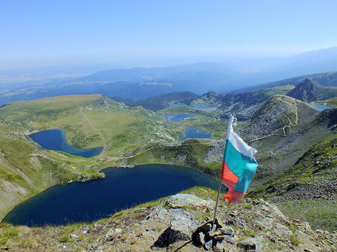
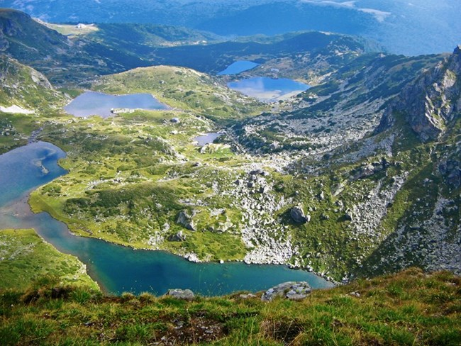
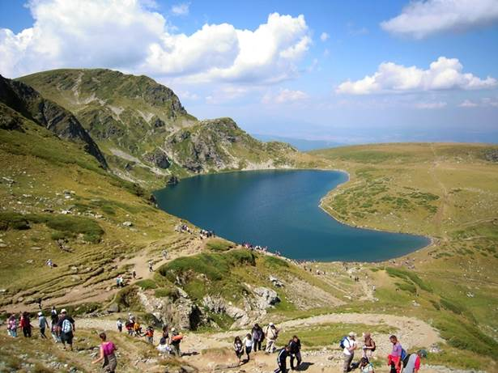
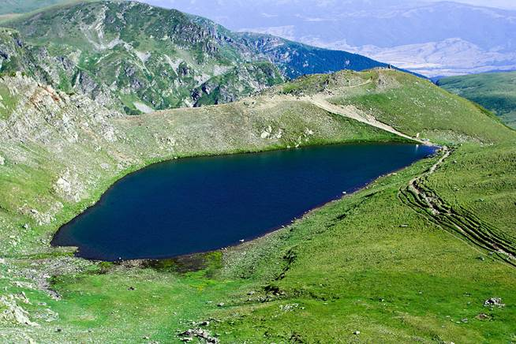
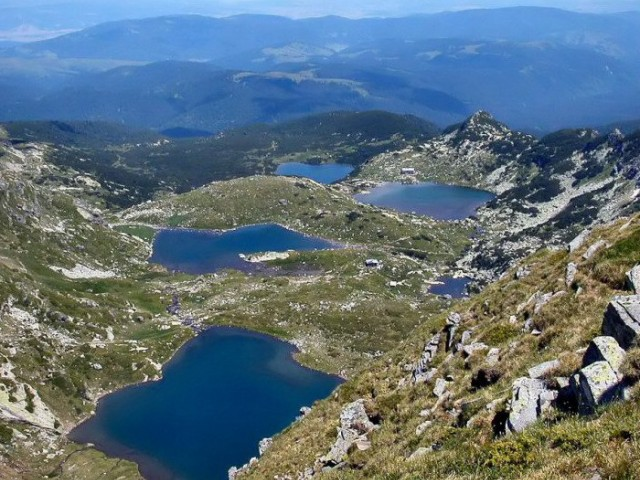
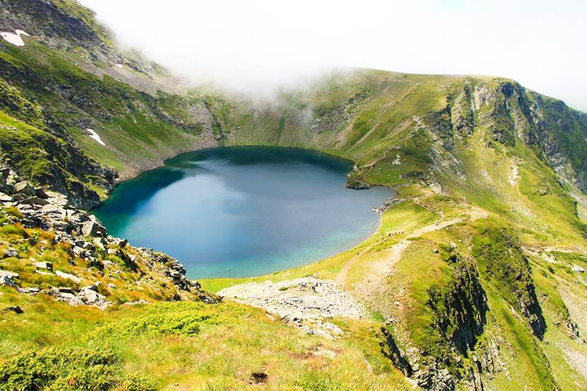

Седемте Рилски езера
| Седемте рилски езера се славят като най-красивото място на Балканите. Тяхното величие и мащаб пленяват всеки посетител и го връщат неведнъж по тези райски места. Езерата са разположени стъпаловидно в голям циркус по северния склон на връх Дамка, Северозападна Рила.Станете част от нашия виртуален поход до гордостта на България! |
 |
|  | Най-благоприятното време да посетим водните богатства на Рила планина е пролетта или лятото. Стягаме раниците и се отправяме към хижа "Пионерска" в Паничище. Оттук хващаме лифта до хижа "Рилски езера", който само за 16 минути ще ни отведе до заветната точка. За тези от вас, които предпочитат планинските преходи, от хижа “Пионерска” има два маршрута - горска пътека и път под лифта. Те се изминават за около час и половина - два. |
| Вълнуващата ни разходка из циркуса на Седемте рилски езера започва от пътеката за старата хижа "Седемте езера", която е на около 30 минути от хижа "Рилски езера". Оттам тръгваме надясно по летния път за хижа "Иван Вазов". По този маршрут за около 3 часа (отиване и връщане) могат да се разгледат всички езера от най-различни ъгли. Те са стъпаловидно разположени по склона на планината и са свързани помежду си чрез малки поточета, които образуват на места водоскоци и водопадчета. |
 |
|  | Извадете фотоапаратите и се пригответе да уловите пленителната красота на Долното езеро, чиито изумрудени води блестят под слънчевите лъчи. Дълбочината му достига 11м и в него се събира водата, която изтича от останалите езера. Оттук следва началото си река Джерман. |
| Следваща ни спирка е Рибното езеро, което е най-плиткото - едва 2.5м. То е наречено така заради формата си. Запечатваме на снимка и неговата красота и се отправяме към езерото Трилистника. То има неправилна специфична форма, която наподобява три листа. Ако застанем на подходящо място, може да успеем да снимаме и трите езера.
|
 |
|  | Следва езерото Близнака, което се намира между Трилистника и Бъбрека. По дълбочина то е на трето място след Окото и Бъбрека.
Продължаваме нагоре към Бъбрека, получил името си отново от вида на формата си. Тук ще видим множество малки рибки, които можем да уловим с ръка. Красивите поляни с многобройни цветя са любимо място за почивка и отмора.
|
| След кратка пауза се отправяме отново по склона и се изкачваме до Окото, което е най-дълбокото езеро - 37.5м. Формата му е почти идеална. Оттук остават около половин час до Езерния връх, от който могат да се видят всички езера наведнъж. От едната му страна се намира и последното езеро - Сълзата. Неговите води са кристално чисти и прохладни. Не ни остава нищо друго, освен да съзерцаваме с благоговение прелестната гледка на невероятните рилски езера и да се увековечим в обща снимка! |
 |
Рилски езера